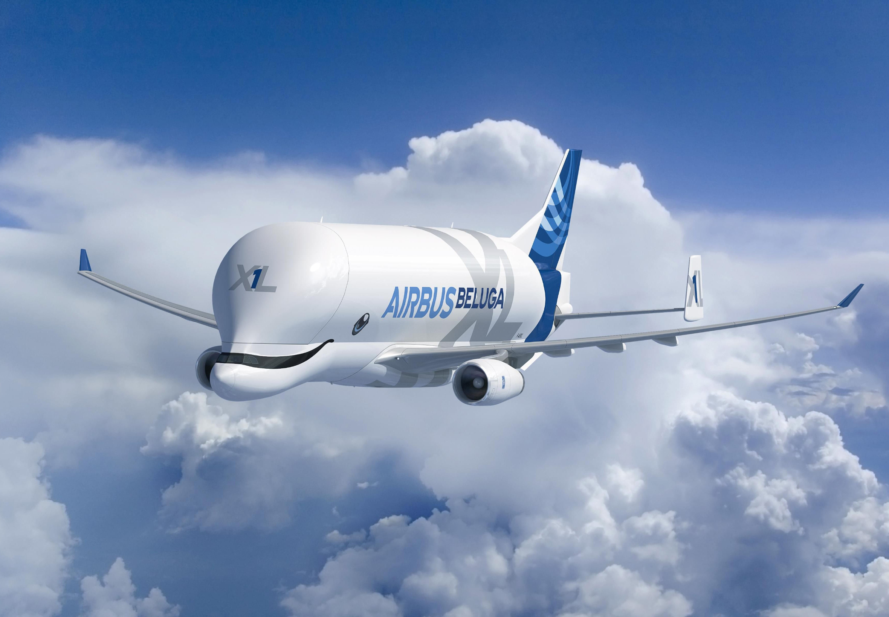

1.
L'Airbus Beluga XL (A330-743L) è un grande aereo da trasporto merci sviluppato dal consorzio europeo Airbus a partire dal 2014, utilizzato solo da airbus per il trasporto di parti per la costruzione di aereomobili sparsi per l'intera europa.
Lo scopo principale di tale aereomobile è quello di convogliare tutti i pezzi prodotti dai vari stabilimenti europei al centro Airbus di Tolosa(Farancia)
Lunghezza 63,10 m
Apertura alare 60,30 m
Diametro fusoliera 8,80 m
Freccia alare 30°
Altezza 18,90 m
Superficie alare 361,6 m²
Peso a vuoto 127 500 kg
Peso carico 227 900 kg
Peso max al decollo 227 000 kg
Capacità 2 209,0 m³
Capacità combustibile 73 000 L
Esemplari: 5(+1 in costruzione)
